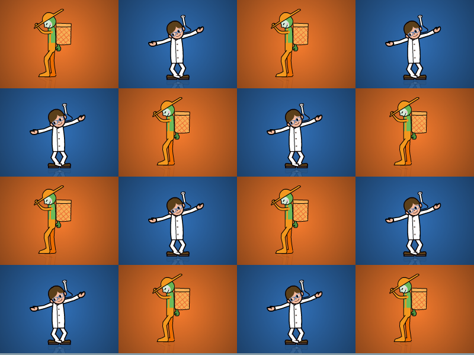

Rhythm Heaven Extras
Rhythm Heaven iTunes Visualizer
Note: This has only been tested on Windows XP on
iTunes 9.2.1
.
DOWNLOAD
.exe file zipped (Windows XP) (5.01 MB)
.exe file zipped (Windows Vista and later) (5.01 MB)
.zip file (Mac OS X) (5.53 MB)
Rhythm Heaven Screensaver

DOWNLOAD
.exe file zipped (Windows) (2.81 MB)
files zipped (Mac OS) (748 KB)


 .exe file zipped (Windows XP) (5.01 MB).exe file zipped (Windows Vista and later) (5.01 MB).zip file (Mac OS X) (5.53 MB).exe file zipped (Windows) (2.81 MB)files zipped (Mac OS) (748 KB)
.exe file zipped (Windows XP) (5.01 MB).exe file zipped (Windows Vista and later) (5.01 MB).zip file (Mac OS X) (5.53 MB).exe file zipped (Windows) (2.81 MB)files zipped (Mac OS) (748 KB)